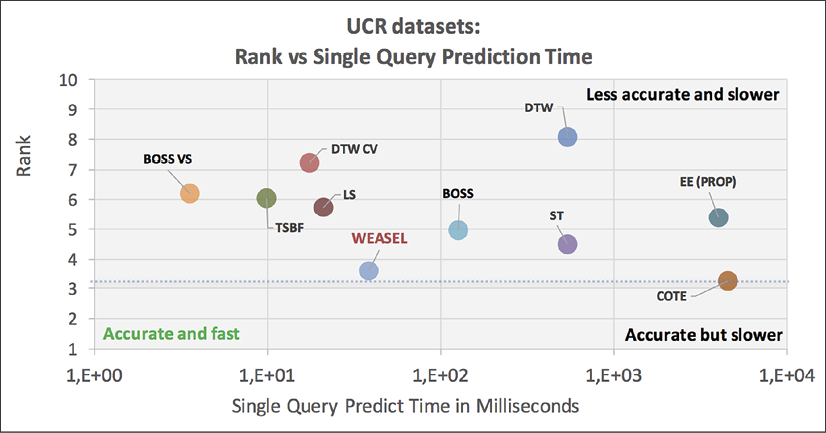

노이즈 제거 — 신호에서 의미를 꺼내는 법
45분
참고 교재: Think DSP: Digital Signal Processing in Python (Allen B. Downey)
소요 시간: 문제 제기 3분 + 이론 12분 + 시연 10분 + 실습 20분
1-1. 문제 제기 (3분)
CNC 밀링머신의 진동 센서가 수집하는 데이터에는 여러 신호가 뒤섞여 있습니다.
[실제 CNC 진동 데이터에 섞인 성분들]
절삭 신호 ──── 우리가 원하는 것 (공구-소재 접촉 정보)
스핀들 노이즈 ──── 회전체의 기계적 진동 (고주파, 일정한 패턴)
채터링 ──── 공구 떨림 (불규칙 고주파, 가공 불량의 전조)
전기 간섭 ──── 모터/인버터에서 오는 전자기 노이즈 (특정 주파수에 집중)Raw plot을 보면 이 성분들을 육안으로 구분하기 불가능합니다.
→ 핵심 질문: 우리가 원하는 신호만 꺼낼 수 있을까?
1-2. 이론 (12분)
① FFT로 먼저 보면 어떨까? (3분)
📖 Think DSP Ch.7 Discrete Fourier Transform — FFT의 정의와 스펙트럼 분석 / Ch.3 Non-Periodic Signals — Spectrogram과 Gabor Limit
FFT(Fast Fourier Transform)는 신호를 주파수 성분으로 분해합니다.
시간 영역 신호 x(t) → FFT → 주파수 스펙트럼 X(f)
진폭 진폭
│ /\/\ │ │ │ │
│ / \ /\/ │ │ │ │ │
└──────────── 시간 └─┴──┴────┴──┴── 주파수- 장점: "어떤 주파수 성분이 얼마나 있는가"를 한눈에 파악
- 단점: "그 주파수가 언제 발생했는가"를 알 수 없다
세부내용: 스펙트럼 분해의 원리 (Think DSP Ch.1 발췌)
신호 처리에서 가장 중요한 아이디어는 스펙트럼 분해(Spectral Decomposition)입니다 — "임의의 신호는 서로 다른 주파수를 갖는 사인파들의 합으로 표현될 수 있다"는 것입니다.


[주파수 성분의 구조]
기본 주파수(fundamental frequency): 가장 낮은 주파수 성분
고조파(harmonics): 기본 주파수의 정수배 주파수 성분들
→ 2차 고조파: 2 × f₀
→ 3차 고조파: 3 × f₀
→ ...
예시) A4 음(440Hz)의 바이올린 신호:
기본: 440Hz (가장 큰 진폭)
1차 고조파: 880Hz (A5, 1옥타브 위)
2차 고조파: 1320Hz (E6, 완전 5도 위)FFT가 생성하는 스펙트럼은 x축이 주파수, y축이 각 주파수 성분의 진폭(amplitude) 또는 파워(power)입니다. CNC 진동 데이터에서도 동일한 원리가 적용됩니다:
- 절삭 신호 → 특정 주파수(공구 회전수 관련)에 집중된 피크
- 스핀들 노이즈 → 고주파 대역에 규칙적 분포
- 채터링 → 불규칙한 고주파 성분
세부내용: Spectrogram과 Gabor Limit (Think DSP Ch.3 발췌)
FFT의 "시간 정보 상실" 문제를 해결하기 위해 Spectrogram(스펙트로그램)을 사용합니다. 신호를 짧은 구간으로 나누어 각 구간의 스펙트럼을 계산한 뒤, 시간-주파수 2차원 플롯으로 시각화합니다.


하지만 Gabor Limit(가보르 한계)라는 근본적 제약이 있습니다:
시간 해상도 ↑ = 주파수 해상도 ↓
시간 해상도 ↓ = 주파수 해상도 ↑
→ 구간을 짧게 자르면 시간은 정확해지지만 주파수가 뭉개짐
→ 구간을 길게 자르면 주파수는 정확해지지만 시간이 뭉개짐
→ 둘 다 완벽할 수는 없음 (불확정성 원리의 일종)이것이 바로 Wavelet Transform이 필요한 이유입니다 — Wavelet은 주파수에 따라 윈도우 크기를 자동으로 조절하여 Gabor Limit을 우회합니다.
② Wavelet Transform의 직관 (3분)
📖 Think DSP Ch.3 Non-Periodic Signals — 시간-주파수 동시 분석의 필요성 / Ch.8 Filtering and Convolution — 주파수 선택과 합성곱 기반 필터
Wavelet Transform은 "돋보기를 스케일 바꿔가며 신호를 훑는 것"입니다.
큰 스케일 (저주파 돋보기) → 신호의 전체적인 추세(절삭 패턴)를 봄
중간 스케일 → 중간 주파수 성분 (스핀들 진동)을 봄
작은 스케일 (고주파 돋보기) → 빠른 변화(채터링, 전기 노이즈)를 봄FFT와의 결정적 차이: 주파수 정보 + 시간 위치 정보를 동시에 갖습니다.
세부내용: 노이즈의 종류와 특성 (Think DSP Ch.4 발췌)


[노이즈 분류 — 파워와 주파수의 관계]
백색 잡음 (White Noise):
→ 모든 주파수에서 동일한 파워 (P = 일정)
→ 스펙트럼이 평평함
→ 예: 전기 간섭의 일부, 센서 열잡음
갈색 잡음 (Brownian/Red Noise):
→ 파워가 주파수에 반비례 (P ∝ 1/f²)
→ 저주파에 파워 집중
→ 예: 기계적 드리프트, 온도 변화로 인한 센서 출력 이동
분홍 잡음 (Pink Noise, 1/f Noise):
→ 파워가 주파수에 반비례 (P ∝ 1/f)
→ 백색과 갈색의 중간③ Hard/Soft Threshold: 어떤 성분을 버릴 것인가 (3분)
📖 Think DSP Ch.8 Filtering and Convolution — Smoothing & Convolution Theorem / Ch.4 Noise — Gaussian Noise
Wavelet 분해 후, 각 레벨의 계수(coefficient)에 임계값(threshold)을 적용해서 노이즈를 제거합니다.
Hard Threshold: |계수| < T → 0으로 설정 (잘라내기)
|계수| ≥ T → 그대로 유지
Soft Threshold: |계수| < T → 0으로 설정
|계수| ≥ T → 크기를 T만큼 줄임 (부드럽게 처리)
→ 제조 데이터 실무: 보통 Soft Threshold가 더 안정적임계값 T는 어떻게 정하나?
가장 널리 쓰이는 방법:T = σ × √(2 × log(N))
σ: 노이즈 표준편차 추정값, N: 신호 샘플 수 (Universal Threshold, Donoho & Johnstone, 1994)
세부내용: 필터링과 합성곱 (Think DSP Ch.8 발췌)


[합성곱(Convolution)의 직관]
입력 신호 × 윈도우(필터) = 출력 신호
합성곱 정리(Convolution Theorem):
시간 영역에서의 합성곱 = 주파수 영역에서의 곱셈
DFT(f * g) = DFT(f) × DFT(g)
→ 이것이 FFT가 빠른 이유: O(N²) → O(N log N)④ pywt 라이브러리 핵심 함수 3개 (3분)
어떤 코드인지 한눈에 보기: pywt 라이브러리로 신호를 분해했다가 다시 합치는 3단계 기본 흐름을 보여줍니다.
import pywt
import numpy as np
# 1. 사용 가능한 wavelet 종류 확인
print(pywt.wavelist(kind='discrete')) # db, sym, haar 등
# 2. 다중 레벨 분해 (DWT)
coeffs = pywt.wavedec(signal, wavelet='db4', level=5)
# coeffs = [cA5, cD5, cD4, cD3, cD2, cD1]
# 근사 디테일5 디테일4 ... 디테일1(최고주파)
# 3. 재합성 (역 DWT)
reconstructed = pywt.waverec(coeffs_modified, wavelet='db4')db4)과 재합성할 때 쓴 이름이 같아야 제대로 복원됩니다.
1-3. Claude Code 시연 (10분)
시연 포인트: 코드 자체보다 Claude에게 어떻게 질문하는가를 주목하세요.
Claude에게 던질 프롬프트 예시:
CNC 밀링머신 진동 데이터에서 채터링 노이즈를 제거하려고 해.
pywt 라이브러리를 사용해서:
1. db4 wavelet으로 5레벨 분해
2. 상위 2개 레벨(고주파)에 soft threshold 적용
3. 재합성 후 원본과 결과를 subplot으로 비교
샘플 데이터는 numpy로 직접 생성해줘.1-4. 실습 (20분)
| 조합 | Wavelet | Level | 관찰 포인트 |
|---|---|---|---|
| A | db4 | 3 | 기준선 |
| B | db4 | 5 | 레벨이 늘면? |
| C | sym5 | 3 | wavelet 종류 변경 시? |
| D | sym5 | 5 | 둘 다 변경 시? |
STEP 1 가상 신호 만들기
import numpy as np
import pywt
import matplotlib.pyplot as plt
np.random.seed(42)
t = np.linspace(0, 1, 1024)
cutting_signal = np.sin(2 * np.pi * 50 * t) # 50Hz: 절삭 신호
spindle_noise = 0.3 * np.sin(2 * np.pi * 200 * t) # 200Hz: 스핀들 노이즈
chatter = 0.2 * np.random.randn(len(t)) # 채터링 흉내
signal = cutting_signal + spindle_noise + chatterSTEP 2 노이즈 제거 함수 — 직접 채워보세요
def denoise_wavelet(signal, wavelet='db4', level=5, threshold_mode='soft'):
# TODO: 여기를 채워보세요
# 1. pywt.wavedec 로 분해
# 2. 고주파 계수에 threshold 적용
# 3. pywt.waverec 로 재합성
passSTEP 3 결과 시각화
fig, axes = plt.subplots(2, 1, figsize=(12, 6))
axes[0].plot(t, signal, label='원본 신호', alpha=0.7)
# TODO: 노이즈 제거 결과를 axes[1]에 그리기
plt.tight_layout()
plt.show()데이터 불균형 — 99% 정확도의 함정
45분
참고 교재: Machine Learning for Imbalanced Data (Kumar Abhishek & Mounir Abdelaziz)
소요 시간: 문제 제기 3분 + 이론 13분 + 시연 10분 + 실습 19분
2-1. 문제 제기 (3분)
상황: 공장 불량 탐지 모델을 만들었더니 정확도가 99%가 나왔습니다. 이 모델은 잘 만든 걸까요?
[데이터 구성]
정상 제품: 9,900개 (99%)
불량 제품: 100개 (1%)
[더미 모델의 전략]
"모든 샘플을 정상으로 예측한다"
정확도 = 9,900 / 10,000 = 99% ✓
하지만 실제로는 불량 100개를 전부 놓쳤습니다
→ 정확도의 역설(Accuracy Paradox)


2-2. 이론 (13분)
① 정확도의 역설 → 올바른 평가 지표 (5분)
📖 ML for Imbalanced Data Ch.1 Introduction to Data Imbalance in Machine Learning
Precision (정밀도) = TP / (TP + FP) → "불량이라고 예측한 것 중 실제 불량의 비율"
Recall (재현율) = TP / (TP + FN) → "실제 불량 중 모델이 잡아낸 비율" ← 핵심 지표
F1-Score = 2 × (Precision × Recall) / (Precision + Recall)


세부내용: 불균형 데이터에서의 평가 지표 상세 (Ch.1 발췌)
F-beta Score (F-β):
= (1 + β²) × (Precision × Recall) / (β² × Precision + Recall)
β > 1: Recall을 더 중시 (예: 불량 탐지에서 놓치는 것이 더 치명적일 때)
제조업에서는 보통 β=2 이상으로 설정하여 Recall을 강조
ROC Curve vs PR Curve — 불균형 데이터에서는 PR Curve가 더 유용:
→ ROC에서는 비슷해 보여도 PR에서는 큰 차이가 나타나는 경우가 많음
→ 결론: 불균형 제조 데이터에서는 PR Curve + F1-Score 조합이 가장 권장됨② SMOTE: 합성 샘플로 균형 맞추기 (4분)
📖 ML for Imbalanced Data Ch.2 Oversampling Methods — SMOTE & Variants


from imblearn.over_sampling import SMOTE
smote = SMOTE(k_neighbors=5, random_state=42)
X_resampled, y_resampled = smote.fit_resample(X_train, y_train)세부내용: SMOTE 변형 알고리즘 (Ch.2 발췌)
from imblearn.over_sampling import ADASYN, BorderlineSMOTE
from imblearn.combine import SMOTETomek, SMOTEENN
methods = {
'SMOTE': SMOTE(random_state=42), # 기본 — 대부분의 출발점
'ADASYN': ADASYN(random_state=42), # 경계 근처 집중 보강
'BorderlineSMOTE': BorderlineSMOTE(random_state=42), # 경계 샘플만 타겟팅
'SMOTETomek': SMOTETomek(random_state=42), # 깨끗한 데이터가 필요할 때
}③ class_weight: 손실함수 레벨에서 조정 (2분)
📖 ML for Imbalanced Data Ch.5 Cost-Sensitive Learning


from sklearn.ensemble import RandomForestClassifier
# 자동 가중치
model = RandomForestClassifier(class_weight='balanced', random_state=42)
# 또는 수동 설정
model = RandomForestClassifier(class_weight={0: 1, 1: 99}, random_state=42)④ 임계값 조정: 0.5가 항상 최선이 아니다 (2분)
📖 ML for Imbalanced Data Ch.5 Cost-Sensitive Learning — Threshold Adjustment


from sklearn.metrics import precision_recall_curve
probas = model.predict_proba(X_test)[:, 1]
precision, recall, thresholds = precision_recall_curve(y_test, probas)
f1_scores = 2 * precision * recall / (precision + recall + 1e-8)
best_threshold = thresholds[np.argmax(f1_scores)]
print(f"최적 임계값: {best_threshold:.3f}")2-3. Claude Code 시연 (10분)
Claude에게 던질 프롬프트 예시:
불량률 1%인 제조 데이터를 시뮬레이션해줘.
1. 기본 RandomForest 모델 학습
2. SMOTE 적용 후 재학습
3. class_weight='balanced' 적용 후 재학습
세 모델의 Confusion Matrix와 F1-score를 나란히 비교하는 시각화를 만들어줘.2-4. 실습 (19분)
STEP 1 데이터 준비
import numpy as np
from sklearn.datasets import make_classification
from sklearn.model_selection import train_test_split
from sklearn.ensemble import RandomForestClassifier
from sklearn.metrics import f1_score, recall_score
from imblearn.over_sampling import SMOTE
X, y = make_classification(n_samples=10000, weights=[0.99, 0.01],
n_features=10, random_state=42)
X_train, X_test, y_train, y_test = train_test_split(X, y, test_size=0.2, random_state=42)STEP 2 k_neighbors별 실험 루프
results = {}
for k in [3, 5, 7, 10]:
smote = SMOTE(k_neighbors=k, random_state=42)
X_res, y_res = smote.fit_resample(X_train, y_train)
model = RandomForestClassifier(random_state=42).fit(X_res, y_res)
pred = model.predict(X_test)
results[k] = {'f1': f1_score(y_test, pred), 'recall': recall_score(y_test, pred)}STEP 3 결과 비교 시각화
import matplotlib.pyplot as plt
ks = list(results.keys())
f1s = [results[k]['f1'] for k in ks]
recalls = [results[k]['recall'] for k in ks]
plt.plot(ks, f1s, marker='o', label='F1')
plt.plot(ks, recalls, marker='s', label='Recall')
plt.xlabel('k_neighbors'); plt.ylabel('score'); plt.legend(); plt.show()CNC 이상탐지 파이프라인 — 공구 마모 시작점 잡기
50분
참고 교재: Machine Learning for Time-Series with Python (Ben Auffarth)
소요 시간: 문제 제기+검증 5분 + 이론 15분 + 시연 15분 + 실습 15분
3-1. 문제 제기 + 데이터 확인 (5분)
목표: 공구 마모가 시작되는 순간을 실시간으로 포착할 수 있을까?
[공구 마모의 진행 단계]
정상 가공 초기 마모 시작 심각한 마모
↓ ↓ ↓
진동 안정적 진동 약간 증가 진동 급격히 증가
RMS 낮음 RMS 서서히 상승 RMS 급등, 불규칙3-2. 이론: 파이프라인 설계 논리 (15분)
① 왜 Raw Signal을 그대로 쓰면 안 되는가: 특징 추출 (5분)
📖 ML for Time-Series with Python Ch.3 Preprocessing Time-Series / Ch.4 Introduction to ML for Time-Series


[핵심 특징 3가지]
1. RMS (Root Mean Square) — 신호의 에너지
RMS = √(Σx² / N) → 마모가 진행될수록 RMS 상승
2. Peak Value — 순간 최대 진폭
→ 채터링, 충격 발생 시 급등
3. Kurtosis — 신호의 첨도 (뾰족한 정도)
Kurtosis = E[(X-μ)⁴] / σ⁴
→ 정상 신호: ~3 (정규분포)
→ 결함 발생: 3 이상으로 상승import numpy as np
def extract_features(signal_window):
rms = np.sqrt(np.mean(signal_window**2))
peak = np.max(np.abs(signal_window))
mean = np.mean(signal_window)
std = np.std(signal_window)
kurtosis = np.mean(((signal_window - mean) / std)**4) if std > 0 else 0
return {'rms': rms, 'peak': peak, 'kurtosis': kurtosis}② 이상탐지 방식 선택: 레이블 유무에 따른 전략 (5분)
📖 ML for Time-Series with Python Ch.6 Unsupervised Methods for Time-Series


from sklearn.ensemble import IsolationForest
model = IsolationForest(contamination=0.05, random_state=42)
model.fit(X_normal)
predictions = model.predict(X_test) # 1: 정상, -1: 이상③ 전체 파이프라인 설계 (5분)



[CNC 공구 마모 탐지 파이프라인]
1. 데이터 수집 → 센서 데이터 실시간 스트림
2. 전처리 (섹션 1) → Wavelet Transform → 노이즈 제거
3. 윈도우 분할 → 슬라이딩 윈도우 (1초 단위, 0.5초 겹침)
4. 특징 추출 → 각 윈도우 → [RMS, Peak, Kurtosis] 계산
5. 이상탐지 → Isolation Forest → 이상 점수 계산
6. 알림 → 이상 점수 > 임계값 → 경보 발생3-3. Claude Code 시연 (15분)
Claude에게 던질 프롬프트 예시:
CNC 밀링머신의 공구 마모 탐지 파이프라인을 만들어줘.
- 시뮬레이션 데이터: 정상 구간 + 마모 시작 구간 포함
- 단계: Wavelet 노이즈 제거 → 슬라이딩 윈도우 특징 추출 → Isolation Forest
- 각 단계의 결과를 subplot으로 시각화
- contamination=0.05로 설정3-4. 실습 (15분)
STEP 1 가상의 공구 마모 신호 만들기
import numpy as np
import pywt
import matplotlib.pyplot as plt
from sklearn.ensemble import IsolationForest
np.random.seed(42)
t = np.linspace(0, 10, 10000)
signal = np.sin(2 * np.pi * 50 * t)
signal[5000:7000] += 0.3 * np.random.randn(2000) # 마모 시작
signal[7000:] += 0.8 * np.random.randn(3000) # 심각한 마모STEP 2 Wavelet 노이즈 제거
def denoise(signal, wavelet='db4', level=5):
coeffs = pywt.wavedec(signal, wavelet, level=level)
threshold = np.sqrt(2 * np.log(len(signal))) * np.std(coeffs[-1])
coeffs[1:] = [pywt.threshold(c, threshold, mode='soft') for c in coeffs[1:]]
return pywt.waverec(coeffs, wavelet)
denoised = denoise(signal)STEP 3 슬라이딩 윈도우 특징 추출
def extract_features_windowed(signal, window_size=100, step=50):
features = []
for i in range(0, len(signal) - window_size, step):
window = signal[i:i+window_size]
rms = np.sqrt(np.mean(window**2))
peak = np.max(np.abs(window))
std = np.std(window)
kurt = np.mean(((window - np.mean(window)) / (std + 1e-8))**4)
features.append([rms, peak, kurt])
return np.array(features)
features = extract_features_windowed(denoised)STEP 4 Isolation Forest로 이상 점수 계산
for contamination in [0.01, 0.05, 0.10]:
model = IsolationForest(contamination=contamination, random_state=42)
model.fit(features)
preds = model.predict(features)
scores = -model.score_samples(features) # 클수록 이상
# TODO: scores 시계열로 시각화심화 학습 자료
📘 섹션 1 심화: 신호 처리
📖 교재: Think DSP: Digital Signal Processing in Python (Allen B. Downey)
Wavelet 종류별 특성
| Wavelet 계열 | 특성 | 적합한 용도 |
|---|---|---|
| Haar | 가장 단순, 불연속 | 단계 함수 신호, 빠른 계산 |
| Daubechies (db) | 비대칭, 지지 소형 | 일반적 제조 진동 신호 |
| Symlets (sym) | db보다 대칭에 가까움 | 위상 왜곡이 민감한 경우 |
| Coiflets (coif) | 높은 소멸 모멘트 | 부드러운 신호 |
| Morlet | 연속 Wavelet, 복소수 | 주파수 분석 중심 |
추천 학습 경로
| 순서 | 챕터 | 핵심 내용 |
|---|---|---|
| 1 | Ch.1 Sounds and Signals | 신호, 주파수, 진폭, 스펙트럼의 정의 |
| 2 | Ch.3 Non-Periodic Signals | Spectrogram, Gabor Limit, 비정상 신호 |
| 3 | Ch.4 Noise | Uncorrelated/Brownian/Pink/Gaussian Noise |
| 4 | Ch.7 Discrete Fourier Transform | FFT 심화 이해 |
| 5 | Ch.8 Filtering and Convolution | Smoothing, Convolution Theorem |
📘 섹션 2 심화: 불균형 데이터
📖 교재: Machine Learning for Imbalanced Data (Kumar Abhishek & Mounir Abdelaziz)
추천 학습 경로
| 순서 | 챕터 | 핵심 내용 |
|---|---|---|
| 1 | Ch.1 Introduction | 정확도의 역설, Confusion Matrix, ROC, PR Curve |
| 2 | Ch.2 Oversampling Methods | SMOTE, ADASYN, Borderline-SMOTE |
| 3 | Ch.3 Undersampling Methods | Tomek Links, ENN, NearMiss |
| 4 | Ch.4 Ensemble Methods | EasyEnsemble, RUSBoost |
| 5 | Ch.5 Cost-Sensitive Learning | class_weight, MetaCost, Threshold |
| 6 | Ch.10 Model Calibration | Platt Scaling, Isotonic Regression, Brier Score |
📘 섹션 3 심화: 이상탐지
📖 교재: Machine Learning for Time-Series with Python (Ben Auffarth)
이상탐지 알고리즘 비교
| 알고리즘 | 방식 | 장점 | 단점 |
|---|---|---|---|
| Isolation Forest | 트리 기반 분리 | 빠름, 고차원 적합 | contamination 설정 필요 |
| One-Class SVM | 경계 학습 | 이론적 근거 확실 | 대용량에 느림 |
| LOF | 밀도 기반 | 지역적 이상 탐지 | n_neighbors 설정 필요 |
| AutoEncoder | 딥러닝 기반 | 복잡한 패턴 학습 | 데이터 많이 필요 |
추천 학습 경로
| 순서 | 챕터 | 핵심 내용 |
|---|---|---|
| 1 | Ch.3 Preprocessing | Feature Engineering, ROCKET, Shapelets |
| 2 | Ch.4 ML for Time-Series | Distance-based, Time-Series Forest |
| 3 | Ch.6 Unsupervised Methods | Anomaly Detection, Change Point Detection |
| 4 | Ch.7 ML Models | KNN+DTW, Gradient Boosting |
| 5 | Ch.8 Online Learning | Drift Detection, Adaptive Learning |